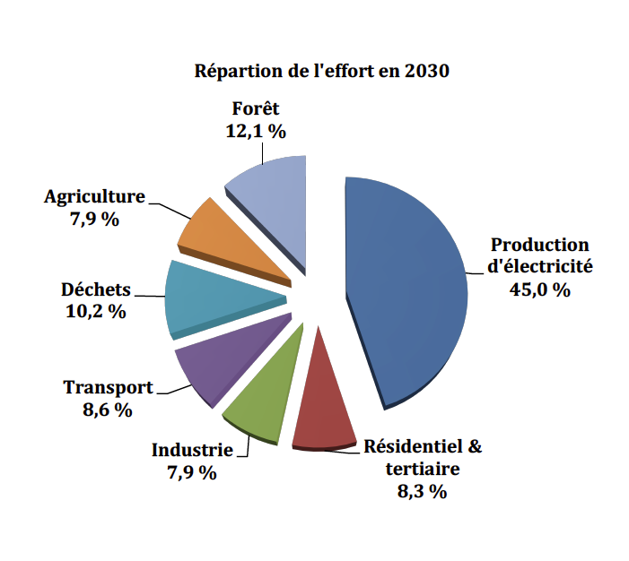

La Contribution Déterminée au niveau National (CDN) du Maroc est une version bonifiée de la Contribution prévue déterminée au niveau national (CPDN) que le Maroc a présentée au secrétariat de la Convention cadre des Nations unies sur les changements climatiques (CCNUCC) le 5 juin 2015. Malgré sa faible responsabilité dans le problème du changement climatique, le Maroc a élaboré sa CDN avec la conviction que les ambitions mondiales pour s’attaquer au problème du changement climatique appellent à un engagement conséquent de toutes les parties tant en matière d’atténuation, d’adaptation que de moyens de mise en œuvre, d’approches de coopération et de transparence. Ainsi, en cohérence avec l’Article 3 de l’Accord de Paris, la CDN du Maroc présente les efforts du Royaume dans la lutte contre le changement climatique sur tous ces thèmes.
Situé sur la rive sud de la Méditerranée, et à la fois aux portes de l’Europe et au nord du continent africain, le Maroc est depuis toujours un carrefour de civilisations. Au cours des dernières décennies, le Maroc a connu un développement économique et démographique très important dans un contexte de changement climatique qui affecte tous les secteurs. Par exemple, la pression sur les ressources naturelles s’est accentuée en conséquence, affectant la résilience des écosystèmes forestiers et du secteur agricole, notamment en raison de la raréfaction des ressources en eau, dont la disponibilité par habitant était plus de trois fois plus importante en 1960 (environ 2600 m3/an/habitant) qu’aujourd’hui (environ 700 m3/an/habitant).
Conscient de cette situation, le Maroc s’est engagé dans une démarche volontaire et sérieuse de lutte contre le réchauffement climatique, en dessinant progressivement les contours de sa propre vision tout en se conformant aux décisions prises collectivement à l’échelle internationale.
Rendre son territoire et sa civilisation plus résilients face au changement climatique tout en assurant une transition rapide vers une économie sobre en carbone.
Cette volonté politique trouve aujourd’hui sa place dans la Constitution du Royaume de 2011, qui lui a apporté une nouvelle impulsion en consacrant le développement durable en tant que droit pour tous les citoyens et en instaurant de nouveaux instruments d’une gouvernance démocratique, condition nécessaire pour asseoir les bases d’un développement durable du pays. Elle est aussi incarnée au sein de la Loi-cadre portant Charte Nationale de l’Environnement et du Développement Durable (CNEDD) qui précise « les droits et devoirs inhérents à l’environnement et au développement durable reconnus aux personnes physiques et morales et proclame les principes qui devront être respectés par l’État, les collectivités territoriales et les établissements et entreprises publics ». L’opérationnalisation de cette charte a été entreprise à travers l’élaboration de la Stratégie Nationale du Développement Durable (SNDD) qui sera à même de guider les actions de toutes les institutions publiques et des acteurs privés visant la réalisation d’un développement économique et social durable et dynamique.
La Contribution du Maroc trouve son ancrage institutionnel dans la SNDD et permet d’esquisser une vision du Maroc à l’horizon 2030. En ce sens, la mise en œuvre de la CDN du Maroc s’inscrit dans une perspective intégrée, allant au-delà du changement climatique, incluant ainsi :
Le Maroc a la conviction qu’un engagement conséquent et sans précédent des acteurs de la société marocaine s’impose, notamment ceux du secteur financier ayant les moyens d’influencer les flux d’investissement et des partenaires financiers internationaux.
Pour faciliter cette mobilisation des acteurs à différentes échelles, le Maroc a mis sur pied le Centre de Compétences Changement Climatique du Maroc (4C Maroc),1qui consiste en une plateforme de renforcement des compétences des différents acteurs et d’échange d’informations en matière de changement climatique, ouvert sur son environnement régional et africain. Le portail Mosaïcc2 a également été établi grâce à un partenariat entre plusieurs institutions nationales et internationales et vise le renforcement de capacités en matière d’adaptation au changement climatique pour les secteurs de l’agriculture, de l’eau et de la forêt. Le 4C Maroc et le portail Mosaïcc seront les moteurs de cette mobilisation.
Pour l’élaboration de sa Contribution, le Maroc a mené un large processus de concertation avec les parties prenantes sur une période de deux ans. Ce processus a permis de passer en revue les politiques et les programmes mis en place par le Maroc pour lutter contre le réchauffement climatique et de définir le niveau d’ambition que le pays souhaite adopter dans le cadre de sa Contribution.
Le processus d’élaboration de la CPDN a été couronné par la tenue d’une conférence nationale, le 2 juin 2015 à Rabat, présidée par le chef du Gouvernement, pour présenter officiellement le projet de CPDN du Maroc à l’ensemble des parties prenantes de la société marocaine. À la suite de l’adoption de l’Accord de Paris, de nouvelles concertations ont permis de solidifier les fondements de la Contribution et de renouveler l’engagement de tous les acteurs du Maroc en s’assurant de leur adhésion dans la mise en œuvre des engagements formulés dans le présent document.
Le Maroc, mû par ses convictions de responsabilité collective mais différenciée, par sa croyance à une destinée commune de l’humanité, par son attachement au principe de l’équité, veut tracer la voie d’un engagement global, responsable et juste pour le bien de l’ensemble de notre planète.
En raison de sa grande vulnérabilité aux impacts du changement climatique, le Maroc doit, en priorité, minimiser les risques d’impacts et miser sur l’adaptation par rapport aux actions d’atténuation. En matière d’adaptation, le Maroc a déployé des efforts très importants, et ce, dès son accession à l’indépendance en 1956. Sur la période 2005-2010, le Royaume a consacré 64 % des dépenses climatiques du pays aux efforts d’adaptation, ce qui équivaut à 9 % des dépenses globales d’investissement.
La part considérable du budget national d’investissement dédié à l’adaptation démontre l’ampleur des enjeux pour la société marocaine. Cet effort est nécessairement appelé à augmenter dans les années et décennies à venir. Par exemple, pour la période 2020-2030, le Maroc estime que le coût de mise en œuvre des programmes d’adaptation dans les secteurs les plus vulnérables au changement climatique, les secteurs de l’eau, de la forêt et de l’agriculture, s’élèvera au minimum à 35 milliards de dollars américains.
En matière d’atténuation, les objectifs de réduction des émissions de GES du Maroc seront réalisés grâce à des mesures prises dans tous les secteurs de l’économie. Une Stratégie de développement sobre en carbone est en cours d’élaboration et coordonnera les objectifs d’atténuation de toutes les stratégies et tous les plans d’action sectoriels, touchant notamment les domaines de l’énergie, l’agriculture, du transport, de l’eau, des déchets, des forêts, de l’industrie, de l’habitat et des infrastructures.
L’engagement du Maroc est de réduire ses émissions de GES en 2030 de 42 % par rapport aux émissions projetées à l’horizon 2030 selon un scénario « cours normal des affaires ». Cet engagement ne sera atteint que si le Maroc accède à de nouvelles sources de financement et à un appui additionnel par rapport à celui mobilisé au cours des dernières années. Cet objectif correspond à une réduction cumulée de 523,5 Mt éq-CO2 sur la période 2020- 2030. L’effort que le Maroc devra consentir pour atteindre cette ambition nécessite un investissement global de l’ordre de 50 milliards de dollars américains, dont 24 milliards sont conditionnés par un appui international grâce aux nouveaux mécanismes de la finance climat, dont le Fonds Vert pour le Climat (FVC).
En matière d’atténuation, le Maroc s’est fixé un objectif de réduction des émissions de GES de 42 %, par rapport aux émissions projetées pour l’année 2030 selon un scénario « cours normal des affaires » (CNA), qui ne pourra être atteint qu’à la condition de recevoir un appui substantiel de la communauté internationale. Le Maroc s’engage également à atteindre un objectif inconditionnel de 17 % par rapport aux émissions CNA en 2030, en comptabilisant les activités de l’Agriculture, de la Forêt et Autres Utilisations des Terres (AFAT).
Ces objectifs de réduction de GES seront réalisés grâce à des mesures prises dans tous les secteurs de l’économie. Une stratégie de développement sobre en carbone est en cours d’élaboration et coordonnera les objectifs d’atténuation de toutes les stratégies et tous les plans d’action sectoriels, touchant notamment les domaines de l’énergie, de l’agriculture, du transport, de l’eau, des déchets, des forêts, de l’industrie, de l’habitat et des infrastructures.
L’ambition du Maroc en matière d’atténuation des GES repose, dans une large mesure, sur une importante transformation du secteur de l’énergie. Cette transformation est menée avec la plus grande détermination politique et vise à réduire la grande dépendance énergétique du pays aux importations, à accroître l’utilisation de sources d’énergie renouvelable et à répondre à la demande croissante en énergie pour soutenir le développement socio-économique et le bien-être de sa population. Les principaux objectifs qui sous-tendent cette transition énergétique sont les suivants :
|
Objectif inconditionnel |
Une réduction de 17 % des émissions de GES en 2030 par rapport aux émissions projetées à la même année selon le scénario CNA, dont 4 % sont réalisés grâce aux activités des secteurs de l’AFAT. En excluant les activités de l’AFAT, l’objectif de réduction est donc de 13 %. |
|
Objectif conditionnel |
Une réduction additionnelle de 25 % réalisable à certaines conditions, ce qui porterait à 42 % la réduction totale des émissions de GES en 2030 par rapport aux émissions projetées à la même année selon le scénario CNA, en comptabilisant les activités de l’AFAT. En excluant les activités de l’AFAT, la réduction additionnelle serait de 21 %, ce qui porterait l’objectif conditionnel à 34 %. |
|
Besoins financiers et conditions |
L’atteinte de l’objectif global de 42 % nécessite un investissement estimé à environ 50 milliards de dollars américains entre 2010 et 2030. L’atteinte de la portion conditionnelle de cet objectif, dont l’investissement est estimé à 24 milliards de dollars américains, est conditionnée par l’accès à de nouvelles sources de financement et un appui additionnel, par rapport à celui reçu au cours des dernières années. |
|
Trajectoires escomptées |
À titre indicatif et seulement pour des fins de planification, le Maroc prévoit que les trajectoires des émissions pour réaliser les objectifs annoncés seront celles présentées à la Figure 1 et dans le Tableau 1. |
Figure 1. Trajectoires des émissions pour les scénarios d’atténuation (avec et sans AFAT)
Tableau 1. Résumé des données clés concernant les scénarios d’atténuation
|
Mt éq-CO2 |
2010 |
2020 |
2025 |
2030 |
Cumul 2020-2030 |
|
Émissions — CNA |
93,9 |
121,6 |
142,7 |
170,8 |
1 584,8 |
|
Émissions — Scénario inconditionnel (avec ATAF) |
93,9 |
107,1 |
116,7 |
141,4 |
1 326,9 |
|
Émissions — Scénario inconditionnel (sans ATAF) |
93,9 |
111,3 |
122,5 |
148,7 |
1 390,5 |
|
Émissions — Scénario conditionnel (avec ATAF) |
93,9 |
97,2 |
91,6 |
98,9 |
1 061,3 |
|
Émissions — Scénario conditionnel (sans ATAF) |
93,9 |
101,9 |
101,8 |
113,2 |
1 172,1 |
|
Réductions escomptées — Scénario inconditionnel (avec ATAF) |
0,0 |
14,6 |
26,0 |
29,4 |
257,9 |
|
Réductions escomptées — Scénario inconditionnel (sans ATAF) |
0,0 |
10,3 |
20,3 |
22,1 |
194,3 |
|
Réductions escomptées — Scénario conditionnel (avec ATAF) |
0,0 |
24,4 |
51,1 |
71,9 |
523,5 |
|
Réductions escomptées — Scénario conditionnel (sans ATAF) |
0,0 |
19,7 |
40,9 |
57,5 |
412,7 |
|
Type d’objectif |
Réduction des émissions par rapport aux émissions projetées pour l’année 2030, selon un scénario CNA. |
|
Couverture |
Économie dans son ensemble. |
|
Gaz couverts |
|
|
Secteurs couverts |
|
|
Scénario « cours normal des affaires » (CNA) |
Projection des émissions de GES à l’horizon 2030, commençant en 2010, première année de mise en œuvre du Plan National de Lutte contre le Réchauffement Climatique. La projection ne prend donc pas en compte les mesures et les actions d’atténuation adoptées à partir de 2010. |
|
Scénarios d’atténuation |
Projections des émissions des GES à l’horizon 2030, commençant en 2010. Le scénario d’atténuation inconditionnel repose sur la mise en œuvre de 24 actions, dont 9 sont des actions de l’AFAT. Le scénario conditionnel pose l’hypothèse de la mise en œuvre de 31 actions supplémentaires sur la période 2010-2030, dont 11 sont des actions de l’AFAT (voir l’Annexe 1). En parallèle, une projection des émissions des GES à l’horizon 2030 prenant en compte l’élimination des subventions publiques aux combustibles fossiles a également été réalisée de façon à évaluer les gains additionnels potentiels en matière de GES provenant de ces réformes. |
|
Potentiel de réchauffement global (PRG) |
Les valeurs de PRG utilisées sont celles déterminées par le Groupe Intergouvernemental des Experts sur le Climat (GIEC), selon la Décision 17/CP.8 de la CCNUCC, pour la préparation des inventaires nationaux d’émissions :
|
|
Méthodologies pour l’estimation des émissions |
L’inventaire des émissions de GES de 2010, ainsi que les scénarios CNA et d’atténuation, ont été réalisés suivant les lignes directrices révisées du GIEC de 1996. Les scénarios CNA et d’atténuation ont été élaborés à partir des données de l’Annuaire des Statistiques Nationales, des données sur les activités sectorielles et des analyses prospectives économiques, démographiques et sectorielles. |
|
Méthodologies pour l’estimation des émissions des secteurs agricole, forestier et d’autres types d’utilisation des terres |
Pour les secteurs agricole et forestier, seule la séquestration du CO2 dans la biomasse a été comptabilisée. Pour le secteur agricole, les émissions et la séquestration des GES comptabilisées sont celles liées à la séquestration du CO2 dans les programmes d’arboriculture et de développement des parcours liés au Plan Maroc Vert (oléiculture, arboriculture fruitière, agrumes, arganiers, cactus, arbustes fruitiers, palmiers dattiers et développement des parcours). Pour le secteur forestier et les autres utilisations des terres, les émissions et la séquestration de GES comptabilisées sont uniquement celles liées aux actions de reboisement et de reforestation, de gestion des parcours et d’aménagement sylvopastoral, de lutte contre l’ensablement, les fours à foyers améliorés et la gestion des risques climatiques forestiers (par exemple, les incendies et la santé des forêts). |
Au cours des dernières années, le Maroc a profondément réformé son cadre institutionnel, juridique et fiscal de façon à permettre la transition vers une économie verte. À titre d’exemple, sur le plan fiscal, le Maroc a réduit les subventions publiques affectées à l’électricité et à différents produits pétroliers, comme les combustibles pour usage industriel et l’essence, créant ainsi un environnement plus propice aux investissements dans les énergies renouvelables et à la rationalisation de la consommation d’énergie. De plus, une réforme institutionnelle est en cours de mise en œuvre et qui, par exemple, élargit le mandat de l’Agence Marocaine de l’Énergie Solaire (MASEN) au développement de toutes les sources d’énergie renouvelable.
La mise en œuvre de la CDN du Maroc s’appuie sur plusieurs lois, stratégies et plans d’action nationaux, dont la Stratégie pour un développement sobre en carbone, qui reprend les objectifs de la CDN ainsi que des objectifs sectoriels précis et ambitieux (voir Tableau 2). À titre indicatif, l’annexe 1 présente le portefeuille d’actions utilisé pour estimer la Contribution du Maroc en matière d’atténuation à l’horizon 2030 et dont la mise en œuvre est envisagée dans le cadre de la CDN. Ainsi, le scénario d’atténuation menant à l’objectif conditionnel repose sur 55 actions, dont 20 actions AFAT, couvrant l’ensemble des secteurs comme l’illustrent les figures 2 et 3.
Les principales stratégies sectorielles et leurs objectifs permettant la mise en œuvre de la CDN figurent dans le Tableau 2.
Tableau 2. Principales stratégies sectorielles et leurs objectifs permettant la mise en œuvre de la CDN en matière d’atténuation
|
Stratégies et plans d’action |
Objectifs |
|
Stratégie Nationale Énergétique |
|
|
Stratégie Nationale de la Logistique |
|
|
Programme National des Déchets Ménagers et Assimilés |
|
|
Programme National d’Assainissement Liquide et d’Épuration des Eaux Usées |
|
|
Plan Maroc Vert |
|
|
Stratégie de Préservation et de Gestion Durable de la Forêt |
|
|
Programme d’Amélioration du Transport Public Urbain |
|



|
Utilisation des mécanismes de marché |
Le Maroc considère comme étant primordiale la mise en place de mécanismes de marché internationaux, de façon à favoriser la coopération entre les Parties dans le respect de leur NDC en matière d’atténuation, tel qu’il est prévu à l’Article 6 de l’Accord de Paris, notamment en réduisant les coûts totaux pour atteindre l’objectif de limitation de la hausse des températures, cité à l’Article 2 de l’Accord de Paris. |
|
Équité et ambition |
Le Maroc considère que sa Contribution est ambitieuse et équitable pour trois principales raisons :
|
Le Maroc fait partie des régions méditerranéenne et africaine où le changement climatique et ses impacts se font sentir depuis plusieurs décennies. Le changement climatique au Maroc se matérialise notamment par une baisse de la pluviométrie et de l’enneigement ainsi que l’augmentation généralisée de la température dans l’ensemble du pays.
Historiquement, le Maroc a connu 20 années de sécheresse au cours des 70 dernières années, soit près du tiers de cette période. Pour l’avenir, de nombreuses études prospectives indiquent que le climat va devenir de plus en plus aride au Maroc, en raison d’une baisse de pluviométrie, d’une augmentation de température et de l’apparition plus fréquente d’événements extrêmes. Les projections climatiques montrent que la baisse de pluviométrie sera de l’ordre de 20 % à l’échelle du pays à l’horizon 2050, avec une accentuation dans les plaines semi-arides. La Troisième Communication du Maroc à la CCNUCC, déposée en 2016, présente un état de la situation complet de la vulnérabilité du Maroc au changement climatique et des actions d’adaptation entreprises.
Le Maroc sera soumis, en raison de sa position géographique, à une grande vulnérabilité au changement climatique : rareté et raréfaction des ressources en eau, baisse de la production agricole, désertification, inondations et l’élévation du niveau de la mer. Grâce aux grands efforts du Royaume en matière de développement humain, la pauvreté sous toutes ses formes a été largement éradiquée en milieu urbain et a fortement baissé en milieu rural, grâce à l’amélioration du niveau de vie des populations et de la lutte contre les disparités sociales. Cependant, ces efforts risquent d’être contrecarrés par le changement climatique en raison de ses impacts négatifs sur l’économie nationale et les communautés, notamment celles vivant en milieu rural. Ainsi, pour le Maroc, l’adaptation aux variations et au changement climatique constitue la pierre angulaire de tout programme ou politique de développement durable. Certains secteurs économiques ou écosystèmes sont particulièrement vulnérables au changement climatique, dont l’eau, l’agriculture, la pêche maritime, le littoral, la forêt et la santé. Pour les autres, les rares données disponibles ne permettent pas d’en étayer la vulnérabilité de façon détaillée.
Au Maroc, les ressources en eau entièrement tributaires des précipitations sont très vulnérables à la variabilité spatiale et temporelle du climat ainsi qu’au changement climatique. Elles connaissent, depuis les années 1980, une baisse substantielle en raison des impacts négatifs du changement climatique et de l’augmentation de la demande domestique et celle des secteurs économiques. Le Maroc fait partie des pays ayant le moins de ressources en eau par habitant. Le potentiel hydrique au Maroc est évalué à 22 milliards de m3 par an, soit une disponibilité en eau inférieure à 700 m3/habitant/an, pour une population de 33,9 millions d’habitants. Avec une projection à 38 millions d’habitants en 2030 et malgré un effort considérable réalisé, en matière de construction d’ouvrages hydrauliques et d’accès aux ressources non conventionnelles, cette quantité d’eau pourrait chuter à 500 m3 à l’horizon 2030 sous la pression du changement climatique, de la croissance démographique et de l’augmentation des activités économiques. Les projections effectuées sur quelques bassins hydrauliques représentatifs indiquent que les disponibilités en eau par habitant subiront une réduction devant engendrer une situation de pénurie en eau à l’horizon 2050. La vulnérabilité du secteur de l’eau sera amplifiée par les coûts croissants de mobilisation ainsi que la détérioration de la qualité des ressources superficielles et souterraines. Les ressources en eau conventionnelles ne seront plus suffisantes pour la satisfaction des besoins de la population et des besoins des différents secteurs socio-économiques. Le développement des ressources en eau non conventionnelles (par exemple, le dessalement de l’eau de mer, la déminéralisation des eaux saumâtres, la réutilisation des eaux usées épurées et la collecte des eaux pluviales) devient une nécessité incontournable pour le Maroc.
Le secteur agricole est central pour l’économie du pays, ayant représenté plus de 14 % de la valeur ajoutée nationale et employé plus de 39 % de la population active, sur la période 2008-2013. C’est un secteur très vulnérable au changement climatique, car la très grande majorité des terres agricoles ne sont pas irriguées. Le secteur agricole a fait face à de nombreuses années de sécheresse durant les dernières décennies, avec des impacts considérables sur les principales productions agricoles, et donc sur l’économie du pays et le niveau de vie des communautés, notamment en milieu rural. De plus, l’aire géographique de répartition de nombreuses espèces arboricoles d’intérêt économique s’est rétrécie, en raison de l’augmentation des températures. De nombreuses études scientifiques réalisées au Maroc montrent que le changement climatique diminuera de façon substantielle les possibilités d’irrigation et les rendements agricoles des cultures et réduira l’aire géographique des espèces d’arbres fruitiers et des principales cultures, dont celles assurant la sécurité alimentaire. Le changement climatique exacerbera la dégradation des ressources naturelles vitales à l’agriculture, essentiellement l’eau, les sols et l’agrobiodiversité. Également, les terres de parcours, qui couvrent 82 % des terres arides du pays, subissent déjà une dégradation des ressources phytogénétiques, d’origine climatique et anthropique, avec des conséquences importantes en termes de désertification du pays et de diminution des ressources fourragères. Il est attendu que le changement climatique accroisse le phénomène de désertification de ces terres et accentue ainsi la dégradation et la perte de productivité déjà entamées des écosystèmes fragiles montagneux, oasiens et de l’arganier qui sont vitaux à la subsistance des populations fragiles, à la sauvegarde des ressources naturelles et à la lutte contre la désertification.
Le secteur de la pêche maritime contribue à hauteur de 2,3 % du PIB du Maroc, emploie près de 660 000 personnes, de façon directe ou indirecte et fait vivre environ 3 millions de personnes. Il assure 15 % des exportations totales du Maroc et 59 % des exportations agroalimentaires. Dans le monde, le secteur de la pêche est considéré comme l’un des plus vulnérables au changement climatique, même si les projections demeurent insuffisamment précises. Cette vulnérabilité est due à la sensibilité au changement climatique des zones d’« upwelling » fortement poissonneuses et aux moyens économiques limités des communautés concernées. Le changement climatique constitue une menace additionnelle, directe et indirecte, pour les écosystèmes océaniques et côtiers souvent déjà fragilisés par d’autres pressions anthropiques. Les conséquences du changement climatique, ajoutées aux effets des activités humaines, se feront sentir sur la distribution et la productivité des stocks halieutiques, ainsi que sur la structure et la productivité de certains écosystèmes et la distribution des espèces. Au Maroc, certaines manifestations du changement climatique, couplées à la surexploitation des ressources halieutiques, sont déjà perceptibles : le décalage dans la période de reproduction, la migration et la disparition de certaines espèces, l’élévation de la température moyenne des eaux marines, la diminution des jours de pêche à la suite de l’augmentation des tempêtes et des inondations et la diminution de stocks qui jusqu’alors avaient été très abondants.
Le Maroc dispose de 3500 km de côtes maritimes, sur ses façades atlantique et méditerranéenne. Le changement climatique aurait des conséquences sur l’augmentation des phénomènes d’inondation, d’érosion des côtes sableuses, de perte de biodiversité côtière et de submersion marine. Le changement climatique pourrait entraver le développement socio-économique du pays et engendrer des dégâts environnementaux importants en absence de contre- mesures, en raison de la concentration de la grande majorité des activités industrielles, urbaines et touristiques aux abords des villes côtières. Déjà, de nombreuses plages marocaines sont en phase d’érosion intensive ou ont disparu, aussi bien sur le littoral atlantique que sur le littoral méditerranéen, et ce, malgré les mesures prises par les pouvoirs publics. L’élévation du niveau de la mer pourrait engloutir la moitié de la superficie des plages à l’horizon 2050 et 72 % à l’horizon 2100 et 187 400 personnes pourraient être affectées par les inondations dues à la montée du niveau de la mer.
Les écosystèmes forestiers offrent des services importants pour le pays et les populations vulnérables. Ils jouent un rôle capital pour le développement socio- économique des zones rurales et de montagnes, jusqu’aux plus reculées du pays. Ces écosystèmes sont soumis à une pression anthropique importante que le Maroc œuvre à ramener à des niveaux respectant leur capacité de production, dans un cadre participatif avec les populations locales. Les conséquences du changement climatique sur les écosystèmes forestiers sont déjà ressenties au Maroc. À titre d’exemple, on peut citer le dépérissement sporadique de certaines cédraies du Moyen Atlas. D’autres risques sont imminents, en l’occurrence, la récurrence et la gravité des incendies de forêt et les problèmes phytosanitaires causés par l’apparition de nouveaux ravageurs. Le changement climatique affectera la vitalité et la dynamique des écosystèmes forestiers, leurs capacités à se régénérer et à faire face aux variations climatiques ordinaires, leur composition (biodiversité faunistique et floristique), leur consistance et leur répartition spatiale. Le changement climatique aura également des conséquences désastreuses sur les grands équilibres écologiques établis, sachant que la géographie du territoire national est caractérisée par la présence de chaînes orographiques d’une extrême importance. Le changement climatique augmentera ainsi le risque que l’aire actuelle de certains écosystèmes forestiers (cédraie, subéraie, tetraclinaie, arganeraie et autres) se rétrécisse au profit des écosystèmes préforestiers, steppiques et sahariens avec toutes les conséquences sur le plan socio-économique et en matière de perte des services écosystémiques.
La vulnérabilité de la santé au changement climatique au Maroc peut être expliquée par la présence des foyers endémiques de maladies susceptibles d’être aggravées par le changement climatique, notamment le paludisme, la bilharziose, la typhoïde et le choléra. Bien que des efforts en matière de lutte contre ces maladies soient déployés, le risque de leur réactivation sous l’effet du changement climatique est toujours possible. Selon l’Organisation Mondiale de la Santé (OMS), le changement climatique provoquerait près de 250 000 décès supplémentaires par an au Maroc entre 2030 et 2050 dus à la malnutrition, au paludisme, à la diarrhée et au stress lié à la chaleur. Selon les scénarios de changement climatique, la capacité vectorielle du virus de la dengue augmenterait de 0,29 à 0,33 en 2070 comparativement à une valeur de référence de 0,22. Les décès diarrhéiques attribuables au changement climatique chez les enfants de moins de 15 ans devraient atteindre environ 10,5 %, soit 1600 décès projetés en 2030. Les décès liés à la chaleur pour les personnes âgées devraient atteindre 50 pour 100 000 à l’horizon 2080, par rapport à la ligne de base estimée à un peu moins de 5 décès pour 100 000 par an entre 1961 et 1990, selon le scénario à fortes émissions de gaz à effet de serre. Les impacts du changement climatique sur l’agriculture affecteraient également de manière disproportionnée les personnes les plus vulnérables à la faim et à la malnutrition.
Le Maroc est une destination touristique de premier ordre à l’échelle mondiale, en raison de la richesse de son patrimoine historique, la diversité de ses paysages naturels, sa proximité avec l’Europe ainsi que par son infrastructure d’accueil, de transport et de communication. Le tourisme contribue à 12 % du PIB et contribue de façon importante à la création de richesses et à la diminution de la pauvreté. Les recettes générées par les non-résidents ayant séjourné au Maroc en 2015 ont été d’environ 6 milliards de dollars américains, couvrant 32 % du déficit de la balance commerciale en 2015. La Vision 2020 du secteur du tourisme vise à positionner le Maroc en tant que référence en matière de développement durable dans le pourtour méditerranéen, sur trois thématiques : le balnéaire, le culturel et la nature. Cependant, le secteur touristique est confronté à des défis importants liés au changement climatique. Les principaux effets du changement climatique sur le secteur ont trait à la rareté de l’eau, la diminution du manteau neigeux, la dégradation des écosystèmes fragiles, la vulnérabilité des infrastructures balnéaires, aux événements climatiques extrêmes et à l’occurrence de nouvelles maladies pouvant résulter de l’augmentation des températures.
Préserver son territoire et sa civilisation de la manière la plus appropriée, en réagissant efficacement aux vulnérabilités de son territoire et en anticipant une politique d’adaptation qui prépare l’ensemble de sa population et de ses acteurs économiques à faire face à ces vulnérabilités.
Le Maroc met en œuvre une approche sectorielle, adaptée aux circonstances et aux spécificités des entités territoriales : les zones de montagne, le littoral, les oasis, les zones agricoles (dont les zones agricoles désertifiées) et les zones urbaines. Les objectifs finaux du Maroc face au changement du climat, qui trouvent également un écho auprès de la communauté internationale, se traduisent concrètement par :
La vision du Maroc en matière d’adaptation se décline en plusieurs objectifs sectoriels chiffrés pour les horizons 2020 et 2030, présentés dans le tableau 3. Bien que le Maroc investisse déjà massivement en adaptation, l’atteinte de ces objectifs ne sera possible qu’avec un appui important de la communauté internationale et des bailleurs de fonds.
Tableau 3. Principaux objectifs en matière d’adaptation
|
Champs d’action |
Principaux objectifs |
|
Agriculture |
À l’horizon 2020 :
À l’horizon 2030 :
|
|
Eau |
À l’horizon 2020 :
À l’horizon 2030 :
|
|
Forêts |
À l’horizon 2020 :
À l’horizon 2030 :
|
|
Pêche et Aquaculture |
À l’horizon 2020 :
À l’horizon 2030 :
|
Pour atteindre ces objectifs, un grand travail de planification a d’ores et déjà été entrepris. La résilience face au changement climatique est ainsi inscrite dans la majorité des stratégies, des plans d’action, programmes et initiatives, dont les plus importants sont présentés dans le tableau 4.
Tableau 4. Principales stratégies sectorielles permettant la mise en œuvre des objectifs en matière d’adaptation
|
Champs d’action |
Stratégies, plans d’action, programmes et initiatives |
|
Multisectoriel |
|
|
Agriculture |
|
|
Pêche et Aquaculture |
|
|
Eau |
|
|
Forêts |
|
|
Urbanisme, infrastructures et aménagement du territoire |
|
|
Tourisme |
|
|
Santé |
|
Ces stratégies, plans, programmes et initiatives mettent en œuvre de nombreux projets pour l’amélioration de l’adaptation au changement climatique. De plus, le Maroc est engagé dans une démarche pour l’élaboration de son Plan National d’Adaptation (PNA), et plus globalement de sa SNDD, pour améliorer son cadre de résilience au changement climatique.
Les besoins en matière d’adaptation auront des implications budgétaires très importantes pour le Maroc, pour tous les secteurs économiques et pour la protection de la santé humaine et animale. Historiquement, sur la période 2005- 2010, le Maroc a consacré 64 % de ses dépenses climatiques à l’adaptation, notamment dans le secteur de l’eau, soit 9 % des dépenses globales d’investissement. De façon plus spécifique, les investissements prévus pour atteindre les objectifs escomptés dans les secteurs de l’eau, l’agriculture et la forêt ont été évalués à 2,5 milliards de dollars américains. La sécurisation du réseau routier national contre les crues additionnelles dues au changement climatique coûterait 5 % de plus que les coûts de construction et d’entretien traditionnel.
La part considérable du budget national d’investissement dédié à l’adaptation démontre l’ampleur des enjeux pour la société marocaine, et cette part est nécessairement appelée à augmenter. Le Maroc envisage qu’au minimum 15 % de ses budgets d’investissement seront dédiés à l’adaptation impacts du changement climatique.
Pour la période 2020-2030, le Maroc estime que le coût de mise en œuvre des programmes d’adaptation des secteurs de l’eau, de la forêt et de l’agriculture, qui constituent les secteurs les plus vulnérables au changement climatique, s’élèvera à un minimum de 35 milliards de dollars américains. Le Maroc prépare actuellement son Plan National d’Adaptation, qui présentera et chiffrera les mesures en matière d’adaptation au changement climatique. En attendant ce plan, les priorités nationales dans ce domaine peuvent se résumer comme suit :
Dans ce contexte, le Maroc sollicite l’appui de la communauté internationale pour mettre en œuvre ces programmes. Au-delà d’un appui financier, le Maroc compte également pouvoir bénéficier d’un appui en matière de renforcement de capacités techniques et institutionnelles, notamment en ce qui concerne la production de données et le partage des connaissances, ainsi que les aspects juridique, financier et d’ingénierie pour la conception et la mise en œuvre de projets aux échelles régional et local, leur suivi et l’évaluation de leurs impacts socioéconomiques.
Le Maroc a développé un système de suivi-évaluation de la vulnérabilité et de l’adaptation au changement climatique visant à doter ses régions d’un dispositif institutionnel permettant d’assurer le suivi de la vulnérabilité climatique et les résultats de l’action en matière d’adaptation en tenant compte de l’aspect genre. Ce projet pilote a d’abord été testé dans des régions du sud du Maroc. L’adoption par les autres régions du pays de ce système de suivi et d’évaluation est prévue pour le moyen terme avec en perspective la mise en œuvre d’un mécanisme national de gouvernance du système de suivi et d’évaluation de l’adaptation au changement climatique.
Cette annexe présente le portefeuille d’actions utilisé pour estimer la Contribution du Maroc en matière d’atténuation à l’horizon 2030. L’objectif inconditionnel du Maroc sera atteint grâce à la mise en œuvre d’une partie de ces actions. Elle est présentée dans le but de faire preuve de transparence et dans une démarche visant à fournir le plus de clarté possible. Le tableau A1 donne un aperçu des actions étudiées et dont la mise en œuvre est envisagée dans le cadre de la CDN.
Tableau A1. Actions étudiées pour estimer les objectifs du Maroc en matière d’atténuation
|
Type |
Actions |
Description |
Estimation des coûts de mise en œuvre (M US$) |
Potentiel de réductions d’émission cumulées 2020—2030 (M téq-CO2) |
|
Actions inconditionnelles |
1. Plan éolien national à l’horizon 2020 |
Mise en place de parcs éoliens sur plusieurs sites à l’horizon 2020. |
3500 |
50,183 |
|
2. Plan solaire national à l’horizon 2020 |
Mise en place de centrales solaires thermodynamiques à concentration et photovoltaïques sur plusieurs sites à l’horizon 2020. |
9000 |
42,557 |
|
|
3. Programme national de promotion de photovoltaïques |
Mise en place de parcs solaires connectés au réseau de moyenne tension pour un total de 1000 MW à l’horizon 2030. |
2000 |
10,689 |
|
|
4. Centrales hydro-électriques à l’horizon 2030 |
Mise en place d’une station de transfert d’énergie par pompage (STEP)de 350 MW au site Abdelmoumen, 300 MW pour une autre STEP et 125 MW pour le complexe hydroélectrique d’El Menzel. |
730 |
12,354 |
|
|
5. Centrales à cycle combiné à l’horizon 2025 |
Importation du gaz de pétrole liquéfié (GPL) et utilisation pour la production d’électricité dans des centrales à cycle combiné pour atteindre 3550 MW à l’horizon 2025. |
2300 |
57,518 |
|
|
6. Étiquetage énergétique des réfrigérateurs |
Mise en place d’un programme d’étiquetage énergétique des réfrigérateurs. |
100 |
1,461 |
|
|
7. Efficacité énergétique pour les enveloppes de bâtiments |
Adoption du code de Réglementation Thermique de Construction au Maroc dans le bâtiment résidentiel et tertiaire. |
18 |
1,229 |
|
|
8. Efficacité énergétique dans le secteur du tourisme |
Mise en place d’un programme d’efficacité énergétique dans le secteur du tourisme, incluant : 300 000 lampes à basse consommation, 300 000 m2 de chauffe-eau solaire et l’application du code de réglementation thermique de construction au Maroc. |
86 |
1,229 |
|
|
9. Ville économe en énergie |
Mise en place d’une ville modèle à faible émission de carbone axée sur des actions efficaces en matière d’énergie, de transport et de gestion des déchets. |
165 |
1,232 |
|
|
10. Parcs éoliens privés |
Mise en place de parcs éoliens par des opérateurs privés. |
195 |
1,255 |
|
|
11. Efficacité énergétique dans l’industrie |
Mise en place d’actions d’efficacité énergétique dans les entreprises industrielles. |
200 |
0,965 |
|
|
12. Extension du tramway de Rabat |
Extension du tramway, qui apporte une solution de choix dans le transport de Rabat, |
157 |
0,465 |
|
|
13. Extension du tramway de Casablanca |
Extension du tramway, qui apporte une solution de choix dans le transport de Casablanca. |
1600 |
5,915 |
|
|
14. Programme de renouvellement du parc des grands taxis |
Renouvellement du parc vétuste actuel des grands taxis en vue de réduire leurs consommations. |
650 |
6,073 |
|
|
15. Programme oléicole à l’horizon 2020 |
Plantation de 447 000 hectares d’oliviers dans les zones inadaptées aux cultures annuelles, afin de lutter contre l’érosion des sols et l’amélioration des revenus des petits agriculteurs. |
1209,5 |
13,699 |
|
|
16. Programme arboriculture fruitière (hors agrumes et hors olivier) à l’horizon 2020 |
Plantation d’arbres fruitiers sur 160 000 hectares afin d’améliorer et de diversifier les revenus des agriculteurs, surtout en zones fragiles de montagne. |
753 |
5,322 |
|
|
17. Programme de plantation des agrumes à l’horizon 2020 |
Plantation d’agrumes sur 45 000 hectares (densité 600 plants/hectares) afin d’améliorer le revenu des agriculteurs et les recettes à l’export. |
450 |
3,660 |
|
|
18. Programme de plantation de cactus à l’horizon 2020 |
Végétalisation des terres nues ou érodées par la plantation de 128 600 ha de cactus en zones arides, résultant en une amélioration du revenu des petits exploitants agricoles et des coopératives féminines. |
91 |
7,892 |
|
|
19. Programme de plantation de palmiers dattiers à l’horizon 2020 |
Plantation de 3 millions de palmiers-dattiers afin d’améliorer la productivité des oasis, de lutter contre la désertification et l’exode rural des jeunes. |
353 |
0,420 |
|
|
20. Programme national de développement des parcours et la régulation des flux de transhumants première tranche à 2020 |
Développement des terres de parcours afin de lutter contre la désertification du pays, améliorant ainsi le revenu des éleveurs et protégeant la biodiversité. |
70 |
0,582 |
|
|
21. Programme de Reboisement et de Reforestation 2010-2030 |
Reboisement et reforestation de 40 000 hectares par an entre 2010-2013 afin de lutter contre la forte déforestation, la perte en ressource en eau, la biodiversité animale et végétale et dans les sols. Protection en aval des bassins versants contre l’envasement et l’érosion hydrique. |
2290 |
28,358 |
|
|
22. Programme de Lutte Contre l’Ensablement 2010-2030 |
Fixation des dunes par des techniques de végétalisation entre 2010-2030 (500 hectares par an) afin de lutter contre l’ensablement et la désertification. |
82,4 |
0,909 |
|
|
23. Gestion des risques climatiques forestiers 2010-2030 |
Inauguration en mai 2016 du Centre national de gestion des risques climatiques et forestiers (incendie, santé des forêts) : superficie concernée de 1536 hectares par an entre 2010-2030. |
253 |
2,625 |
|
|
24. Programme de fours à efficacité énergétique : 2010-2030 |
Distribution de 1600 fours par an entre 2010-2015 et 6000 fours par an entre 2016-2030, afin de réduire la consommation de bois prélevée des forêts, par rapport aux fours traditionnels, pour les besoins de chauffe et de cuisson des populations riveraines. |
15 |
0,030 |
|
|
Total — Actions inconditionnelles |
26 268 |
257,870 |
||
|
Actions conditionnelles |
25. Plan éolien national à l’horizon 2030 |
Extension de l’action #1 de 2000 MW. |
3500 |
18,139 |
|
26. Plan national solaire à l’horizon 2030 |
Extension de l’action #2 de 2000 MW en centrales solaires thermodynamiques à concentration et photovoltaïques. |
9000 |
13,605 |
|
|
27. Microcentrales hydrauliques à l’horizon 2030 |
Mise en place de plusieurs microcentrales totalisant une capacité de 100 MW à l’horizon 2030. |
250 |
5,70 |
|
|
28. Centrales à cycle combiné à l’horizon 2030 |
Extension de l’action #5 à une capacité de 4750 MW. |
1020 |
10,173 |
|
|
29. Plan national de développement des chauffe-eau solaires |
Développement de la filière solaire thermique en vue d’atteindre 1 700 000 m2 à l’horizon 2030. |
945 |
15,22 |
|
|
30. Programme de lampes à basse consommation dans le secteur résidentiel |
Mise en place de 14 700 000 lampes à basse consommation dans le secteur résidentiel. |
18 |
13,932 |
|
|
31. Installations de panneaux solaires photovoltaïques |
Mise en place d’un programme de promotion des panneaux solaires photovoltaïques connectés aux réseaux basse tension d’une capacité totale de 1000 MWc à l’horizon 2030. |
2020 |
4,145 |
|
|
32. Programme d’efficacité énergétique dans l’éclairage public |
Mise en place d’un programme d’efficacité énergétique dans l’éclairage public dans les grandes villes du Maroc. |
310 |
0,719 |
|
|
33. Gaz naturel dans le secteur industriel à l’horizon 2030 |
Importation du gaz de pétrole liquéfié pour augmenter l’utilisation industrielle en remplacement du mazout pour améliorer le rendement et l’environnement local. |
650 |
9,548 |
|
|
34. Programme de valorisation de la biomasse dans l’industrie |
Inventaire, organisation et valorisation de la filière biomasse pour utilisation industrielle en substitution du mazout. |
565 |
10,705 |
|
|
35. Programme d’implantation de système de gestion de l’énergie et de la productivité (SGEP) et de la norme ISO 50001 dans l’industrie |
Mise en place d’un programme d’implantation de systèmes de gestion de l’énergie et de la productivité (SGEP) et de la norme ISO 50001 dans l’industrie. |
52 |
1,587 |
|
|
36. Projet de récupération d’énergie par les compresseurs pour la période 2021-2025. |
Mise en place d’un projet pilote de récupération d’énergie par les compresseurs d’air dans 250 entreprises industrielles |
6 |
3,995 |
|
|
37. Projet-pilote d’implantation de production centralisée des utilités pour un parc industriel intégré |
Mise en place d’un projet pilote d’implantation de production centralisée des utilités pour un parc industriel intégré. |
72 |
2,457 |
|
|
38. Valorisation des cendres volantes dans l’industrie des matériaux de construction |
Mise en place d’un projet de valorisation des cendres volantes dans l’industrie des matériaux de construction. |
0,0 |
2,973 |
|
|
39. Projet de recyclage de Polychlorure de vinyle (PVC) |
Mise en place d’un projet de recyclage de PVC. |
0,2 |
0,117 |
|
|
40. Stratégie nationale de développement de la logistique |
Mise en œuvre des actions de : formation à l’écoconduite des chauffeurs de camion, installations de parcs photovoltaïques, amélioration de la maintenance et du contrôle technique des véhicules de marchandises et du transfert modal de la route vers le rail. |
350 |
35,122 |
|
|
41. Renouvellement des véhicules utilitaires de plus de 20 ans entre 2025 et 2030 |
Renouvellement des véhicules utilitaires de plus de 20 ans en vue de réduire leurs consommations entre 2025 et 2030. |
3 |
2,216 |
|
|
42. Traitement mécanobiologique et co- incinération des déchets ménagers |
Valorisation des déchets ménagers par un traitement biomécanique associé à la co-incinération. Ce procédé consiste à la réalisation des opérations suivantes : tri mécanique et broyage, opération biologique avec séchage en aérobie. |
1440 |
58,811 |
|
|
43. Valorisation des émanations de GES en provenance des stations de traitement des eaux usées |
Collecte du biogaz au niveau des stations de traitement des eaux usées (STEP) en vue de le valoriser dans la production d’énergie électrique. |
620 |
9,267 |
|
|
44. Programme oléicole 2020-2030 |
Extension de l’action #15 sur 232 000 hectares. |
628 |
6,591 |
|
|
45. Programme arboriculture fruitière (hors agrumes et hors olivier) 2020-2030 |
Extension de l’action #16 sur 112 000 hectares. |
527 |
3,471 |
|
|
46. Programme de plantation des agrumes 2020-2030 |
Extension de l’action #17 sur 28 000 hectares. |
280 |
2,118 |
|
|
47. Programme de plantation de l’arganier 2020-2030 |
Plantation de l’arganier sur une superficie de 38 000 hectares afin d’améliorer la résilience des populations vulnérables au changement climatique, d’augmenter le stockage de carbone dans la biomasse et les sols et de réduire indirectement la pression anthropique et industrielle sur les forêts d’arganier sauvage. |
112 |
0,613 |
|
|
48. Projet de plantation de cactus 2020- 2030 |
Extension de l’action #18 sur 66 162 hectares. |
47 |
3,808 |
|
|
49. Projet de plantation d’autres arbustes fruitiers 2020-2030 |
Plantation d’arbustes fruitiers sur 15 000 hectares afin d’améliorer et de diversifier les revenus des petits agriculteurs. |
88 |
0,726 |
|
|
50. Programme de plantation de palmiers dattiers à l’horizon 2020-2030 |
Extension de l’action #19 sur 1,5 million de palmiers dattiers. |
177 |
0,195 |
|
|
51. Programme national de développement des parcours et la régulation des flux de transhumants 2020-2030. |
Extension de l’action #20 sur 300 000 hectares entre 2020 et 2030. |
60 |
0,463 |
|
|
52. Programme de Reboisement et de Reforestation 2020-2030 |
Extension de l’action #21 pour atteindre 60 000 hectares par an. |
573 |
25,090 |
|
|
53. Programme de Lutte Contre l’Ensablement 2020-2030 |
Extension de l’action #22 pour atteindre 800 hectares de végétation par an. |
25 |
0,735 |
|
|
54. Gestion des risques climatiques forestiers 2020-2030 |
Extension de l’action #23 pour atteindre une superficie sauvée de 2304 hectares par an. |
63 |
3,345 |
|
|
55. Programme de fours à efficacité énergétique 2020-2030 |
Extension de l’action #24 pour atteindre une distribution de 8000 fours par an. |
3 |
0,023 |
|
|
Total — Actions conditionnelles |
23 401 |
265,623 |
||
|
Total — Toutes les actions |
49 669 |
523,493 |
||
1. Voir : www.4c.ma↩
2. Voir : www.changementclimatique.ma↩